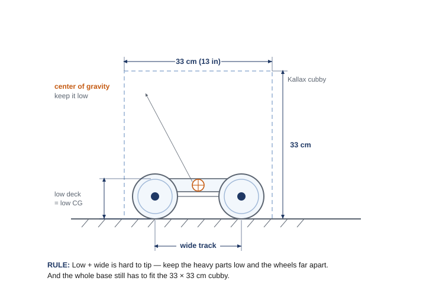

The capstone: put it all together
You've built a structure, geared for torque, turned a corner with a bevel gear, and converted rotary motion into a bob and a wave. The Survival Challenge is where all of that comes together on one open problem. A client has a survival situation and needs a machine to help — and the catch is that how you solve it is up to you. Two teams can pick completely different challenges, or the same challenge and solve it two different ways, and both can be excellent. What makes it the capstone is that nobody hands you the mechanism: you define the problem, choose your approach with a decision matrix, build it from your kit, and improve it from your own test results.
Pick your challenge
Choose one of these four survival tasks — or propose your own to your teacher. Each one is solved with a different reach into your Unit 2 toolkit:
- Task 1 · Rough-terrain vehicle. The survivors need a vehicle that crosses rough terrain to search for others and collect data. It has to drive all its wheels for traction — ideally switching between two-wheel and four-wheel drive. The way to power all four wheels is to link the axles with chain and sprockets, or a gear train with an idler gear so the wheels still turn the right way. (The original challenge suggests a universal joint — but u-joints are fragile and competition teams design them out, so route the drive with chain or gears instead.)
- Task 2 · Solar-dish rotator. A solar collection dish has to be turned by a machine sitting around a corner from it, with a gear ratio of at least 1:5 (or 5:1), and it must follow the sun. "Around a corner" is the giveaway: a bevel gear turns the drive 90° to reach the dish, and the big reduction gives slow, controllable aiming.
- Task 3 · Heavy-equipment mover. Doctors need one machine to move heavy equipment between rooms — horizontally and vertically (some rooms are upstairs). It carries a lot of weight (slow is fine), so gear down hard for torque and add a lift: a rack-and-pinion or leadscrew raises a load in a straight line. The task also asks for a "cardioregulator" — a device with a steady, repeating beat, which is exactly what a cam or crank produces.
- Task 4 · Survival station. One machine that pumps water, cuts wood, and grinds grain — all three — driven by a single input (one motor or crank). This is the deep-end integration: one drive splitting into several mechanisms (gear trains plus cams or cranks) at once.
🎯 What makes it the capstone
You run the full design process on your own, and your solution must integrate Unit 2: a rigid structure, a deliberate gear choice, and at least one mechanism doing real work. Then it has to actually do the job — meet the success criterion you set for your challenge.
Decompose: break the challenge into jobs
An open challenge feels big until you split it into jobs — the separate things your machine has to do. Then each job points to a tool you already own from Unit 2. Here's that move worked out for Task 1, the rough-terrain vehicle:
🧰 Your Unit 2 toolkit
Everything you can reach for is something you've already built:
- Structures (Ch 1): rigid, cross-braced frames that don't flex under load.
- Gears & ratios (Ch 3–4): gear down for torque (lifting, pushing, climbing), up for speed; compound trains for big reductions; a bevel gear to turn the axis 90°.
- Motion mechanisms (Ch 5–6): a cam-and-follower (rotary → reciprocating) and a crank-and-rocker (rotary → oscillating) when the job needs a bob, a wave, or a repeating stroke.
- Advanced mechanisms (Advanced Gear Kit): an idler gear keeps two gears turning the same way (the trick for driving all four wheels); a worm & wheel gives a big reduction and holds its position — it can't be back-driven, so it's perfect for an aimer or a lift that must stay put; a rack & pinion or leadscrew turns rotation into straight-line motion for a lift; a differential lets two driven wheels turn at different speeds through a turn.
The design process — this time on your own
The loop is the same one you ran on the windmill, but now you drive it without a step-by-step worksheet: define → brainstorm (≥3 sketches) → select with a decision matrix → build → test → improve, looping until it works. Document each step in your engineering notebook — the notebook is the deliverable for this project, so the restated problem, your labeled sketches, the matrix, your gear choice, and your test-and-iterate entries all live there.
The design brief
Same as any job: restate it in your own words first — that's Define — right in your notebook.
📋 Survival Challenge design brief
- Client: someone in a survival situation who needs a machine to do a specific job (the task you choose).
- Problem statement: people facing this situation need a reliable, hand-built machine that accomplishes the task within the constraints — no off-the-shelf solution available.
- Design statement: design and build a machine that solves your chosen challenge, integrating a structure, a gear choice, and at least one mechanism from Unit 2.
- Constraints: build from your classroom Gateway kit; the whole machine fits one storage cubby (an IKEA Kallax compartment — a 33 × 33 cm / 13 × 13 in opening, about 38 cm / 15 in deep); standard wheels only if it rolls (the newer traction and omni-wheels are reserved for the competition team); it must meet the success criterion you set for your challenge.
- Deliverables: a working machine that does the job, a completed decision matrix, and a documented engineering notebook.
Choosing on purpose: the decision matrix
You know the tool by now: list the criteria, weight each, score each concept, multiply, and total. Your criteria depend on your challenge — but the must-haves get the big weights. Here it is for three rough-terrain vehicle concepts (Task 1), scored 1 (poor) to 5 (great):
| Criterion | Weight | A · big-wheel crawler (geared down) | B · wide 4-wheel pusher | C · fast light runner |
|---|---|---|---|---|
| Gets over obstacles | 5 | 5 → 25 | 3 → 15 | 2 → 10 |
| Travels straight & far | 4 | 4 → 16 | 4 → 16 | 5 → 20 |
| Sturdy — survives the run | 3 | 5 → 15 | 4 → 12 | 2 → 6 |
| Easy to build in time | 2 | 2 → 4 | 4 → 8 | 5 → 10 |
| Fits the cubby | 2 | 5 → 10 | 5 → 10 | 5 → 10 |
| Total | 70 | 61 | 56 |
The geared-down crawler (A) wins even though it's the hardest to build and not the fastest — because it nails the two highest-weighted criteria: getting over obstacles and surviving the run. The fast runner (C) is easy and quick but loses badly, because speed isn't what this challenge rewards. That's the whole point of weighting: it forces the must-haves to win. Pick your own criteria and weights for your own challenge — and let the math, not the gut, choose your starting design.
🧭 Decision matrix, in four steps (recap)
1. List 4–6 criteria, including your hard constraints and the one thing the challenge most rewards. 2. Weight each 1–5 — must-haves get the big numbers. 3. Score each concept 1–5, honestly. 4. Multiply score × weight, total each column; the highest total is your starting design.
📐 See it in CAD — then draw your own
Almost every survival build needs a stable base, so here's one drawn the engineering way. Two rules do most of the work: keep the center of gravity low (heavy parts down near the wheels) and the track wide (wheels far apart). Low and wide is hard to tip — and the whole base still has to pass through the cubby.

This course uses Onshape (free for schools) for 3D CAD and drawings. Browse VEX parts in the VEX CAD library.
📐 Your build constraints
The same rules as every build this year, plus the one that defines the capstone:
1 · Build from your classroom kit. Use the parts in your classroom Gateway kit — structure, wheels, gears, the bevel gears in the Advanced Gear Kit, and the Winch & Pulley Kit if you lift. It's mostly EXP plus some V5 mechanism parts, all yours to use. Just don't pull from the separate competition team's V5 kit, so it stays complete.
2 · It has to fit the cubby. The whole machine must fit one storage cubby — an IKEA Kallax compartment, a 33 × 33 cm (13 × 13 in) square opening, about 38 cm (15 in) deep. Design to that envelope and break the build down to store it.
3 · Standard wheels only (if it rolls). If your solution drives, don't use the newer traction wheels or the omni-wheels — those are reserved for the V5 competition robots and are in short supply. Build on the standard wheels in your kit (and for an all-terrain mover, omni-wheels would slide sideways anyway — you want it to track straight).
4 · Integrate Unit 2, and solve it for real. Your machine must use a rigid structure, a deliberate gear choice, and at least one mechanism — and it has to meet the success criterion you set. A pile of parts that doesn't do the job isn't done, no matter how clever.
⚠️ Safety
- Keep fingers, hair, and loose clothing clear of meshing gears and moving mechanisms — they pinch where parts come together.
- If your machine lifts or raises a load, keep it light, lift it over the table (not over hands or laps), and stand clear of the drop zone.
- Test where the machine won't run off an edge, drive it at safe speeds, and keep small parts and decorations firmly attached.
📚 Learn more — VEX Library
- Building with VEX EXP — structures, shafts, and bearings; keeping a frame rigid so gears stay meshed under load.
- Using Gear Ratios with the V5 Motor — choosing a ratio to trade speed for the torque a survival task usually needs. Heads-up: V5/competition page (12T/84T gears); build the same ideas with your 24/36/48/60T EXP gears.
- VEX Gears overview — spur gears for speed/torque, and bevel gears for turning the axis of motion 90° (handy for an aimer).
- Using the VEX CAD Files — official part models to drop into Onshape when you draw your design.
What you'll need
- VEX EXP kit: structure (C-channels, plates, standoffs), spur gears (24/36/48/60T), and the Advanced Gear Kit (bevel, worm, and rack gears) as your challenge needs
- Standard wheels and axles (not the competition traction/omni-wheels) if your machine rolls; the Winch & Pulley Kit if it lifts
- Shafts, bearing flats, shaft collars for rigid, low-friction mechanisms
- An EXP Smart Motor or a hand crank to drive it, as your design requires
- The success criterion / challenge setup your teacher provides; design brief and decision-matrix templates; engineering notebook
Do it
- Define. Pick your challenge. Restate the problem, the constraints, and your success criterion (how you'll know it worked) in your notebook, in your own words.
- Decompose & brainstorm. Break the challenge into jobs. Sketch at least three concepts; on each, label which Unit 2 tool handles each job (structure, gear choice, mechanism).
- Select. Fill in your decision matrix (your own criteria and weights), total the columns, and choose your design. Record the choice.
- Build the structure first. Get a rigid, stable frame that fits the cubby — wide and low if it drives. Then add the mechanism, and gear it for the torque or speed the job needs.
- Test against the criterion. Run it on the real challenge. Does it do the job reliably?
- Improve. Fix what failed — gear down further, stiffen the frame, reduce friction, widen the base — and loop, recording each change.
- Showcase. Demonstrate against the challenge; give and collect peer feedback in your notebook, and submit your notebook.
Check your understanding
- Which survival challenge did you choose, and what was the success criterion you designed for?
- Which Unit 2 ideas did your solution rely on most — a structure, a gear ratio, or a motion mechanism? Give a specific example from your build.
- Did your machine need more torque or more speed? Which way did you gear, and why?
- Break your challenge into its jobs. Which job was the hardest to solve, and what mechanism did you use for it?
- What failed during testing, and what single change did you make that helped the most? (Cite a specific iteration.)
- If you had one more class period, what is the one change that would most improve your solution — and why that one?
Key terms
Sources (VEX Library, kb.vex.com / vexrobotics.com): Building with VEX EXP; Using Gear Ratios with the V5 Motor; VEX Gears overview (spur gears change speed/torque; bevel gears change the axis of motion 90°); Using the VEX CAD Files. The Survival Challenge as an open-ended Unit 2 capstone — integrating structures, gears, and mechanisms through the full engineering design process — is adapted from the PLTW Gateway Automation & Robotics curriculum. Stability guidance (a lower center of gravity and wider track resist tipping) is standard mechanical-design practice.